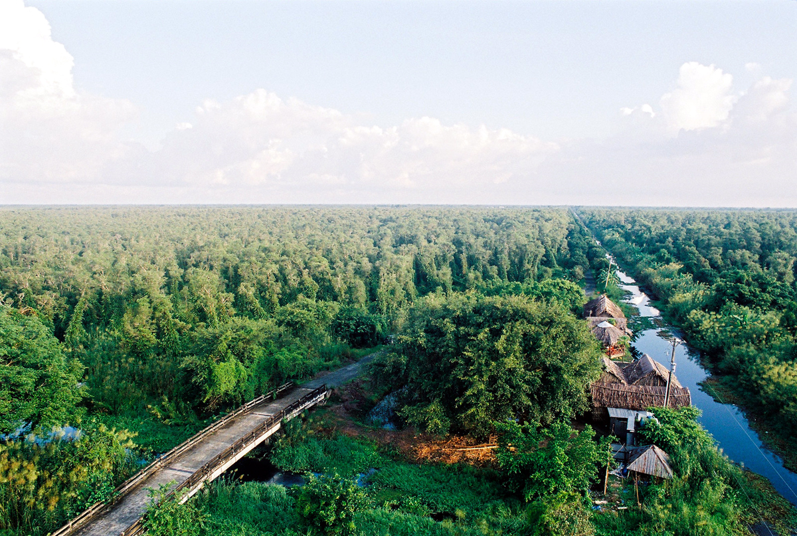

Vị trí: Huyện U Minh và Trần Văn Thời, Cà Mau.
Diện tích: Khoảng 8.527 ha.
Đặc điểm: Rừng tràm trên đất than bùn.
Đa dạng sinh học: Nhiều loài chim, thú và thực vật quý.
Vai trò: Bảo tồn và phát triển du lịch sinh thái.
